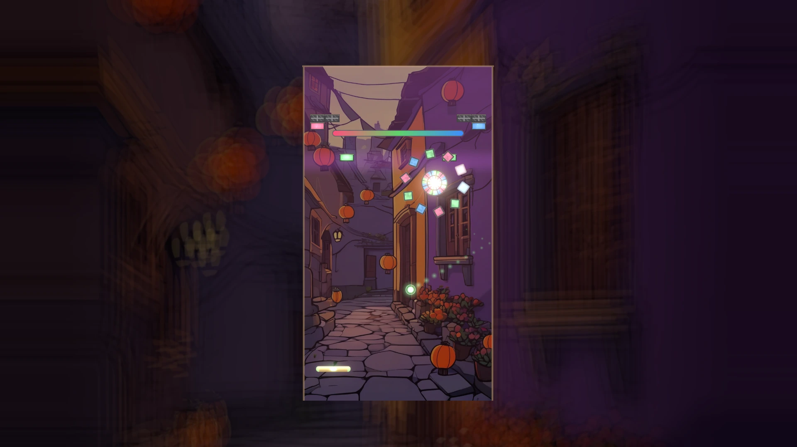
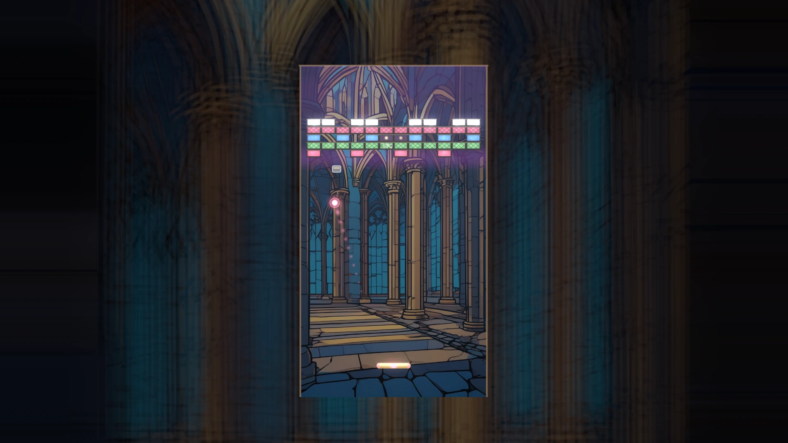
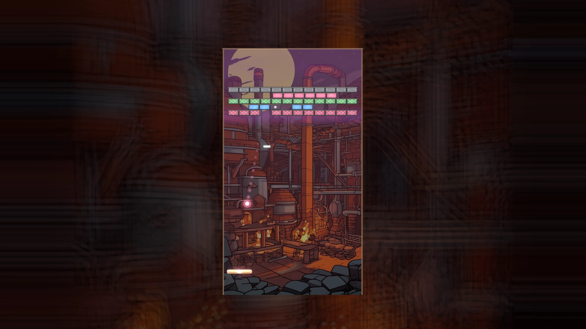

Emberpane — a stained-glass brick breaker
Emberpane is a brick breaker that runs in your browser: you bounce a living ember off a brass deflector and shatter stained-glass windows to set their light free. Since a great fire, the city of Candlemere has waited under an evening that never ends, because Vesper, the Glass Abbess, shut all of its daylight away inside her windows. Maud has kept one spark of the old sun alive in her lamp, and she gives it to four children she calls Kindlers. Each pane they break lets a little daylight back into the streets. It is free, with nothing to download and no account, on a phone, a tablet or a computer.


The ember and the Dusk
Your deflector sits on the bottom line and the ember bounces off it. Glass that the ember hits cracks, then shatters. The whole mass of glass creeps down towards you, carried by the Dusk, and every pane you break pushes it back up a little. Miss the ember, or let the glass reach your line, and one of your lanterns goes out. When none are left, the window is lost.
The glass fights back. Small creatures solder broken panes back into place, cling to the ember, drop bolts, raise shields and ring bells that drag the Dusk down faster.
Tint and heat
The deflector is always one of three colours, rose, moss or cobalt. The ember takes that colour when it bounces, and for a short while it passes straight through glass of its own colour and breaks what lies behind. Change colour with Q and E, or tap one of the three swatches on the screen.
Break three or more panes before the ember comes back to you and it runs hot: faster, and harder on the glass.
Five acts
The game has 45 windows in five acts: Lantern Row, Bell Quarter, Mirror Nave, Kiln Works and Sun Spire. Each act has eight windows and ends with a boss window: the Rose Warden, the Bellwright, the Abbess's Echo, the Kiln Mother and, last, Vesper herself. Each act opens with a short scene of the story, and you can skip any scene straight to play. Every window keeps up to three stars, and a locked window tells you which window opens it.
Gentle, Normal and Hard
On Gentle your lanterns never go out and the Dusk moves slowly. Normal gives you five lanterns. Hard gives you three, a faster Dusk and a faster ember.
Playing with friends
Press Play with friends and share the link: up to four players break the same window together, and everyone has their own deflector and their own ember. Open the link late and you watch for a moment, then drop into the window that is already under way. The four seats are the four Kindlers: Juno, Pell, Tam and Ivy. Your room code stays the same when you reload, so a link you shared keeps working until you press New code.
Keys, mouse, touch and gamepad
Move the deflector with the mouse, a finger, A and D, or the arrow keys. Space or a tap launches the ember. Q and E change colour. To pause, press Escape or P. You can also plug in a gamepad: it steers in a window and moves through the menus too.
What is not done yet
For now, Emberpane is in English only: the menus, the story and this page are not translated yet.
More like this: 2-player games online · Multiplayer browser games